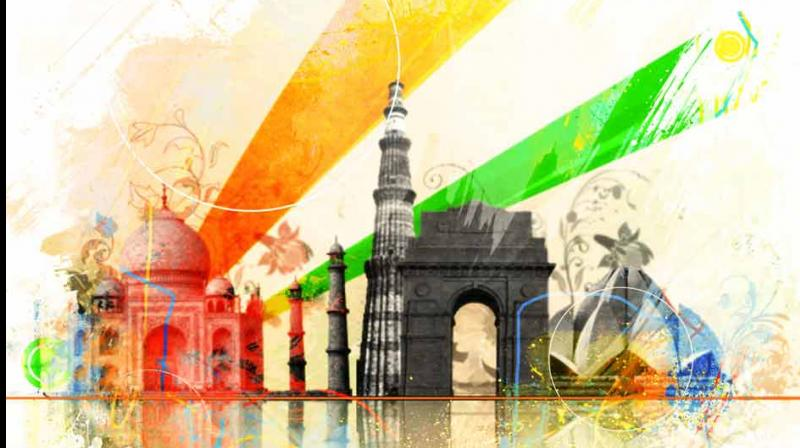

Travel and tourism is the largest service industry in India. It provides heritage, cultural, medical, business and sports tourism. The main objective of this sector is to develop and promote tourism, maintain competitiveness of India as tourist destination and improve and expand existing tourism products to ensure employment generation and economic growth. In this section, we provide information about various tourist destinations, modes of travel, accommodation and approved travel agents.
Important Links
Website of Ministry of Tourism
Website of National Mission for Manuscripts